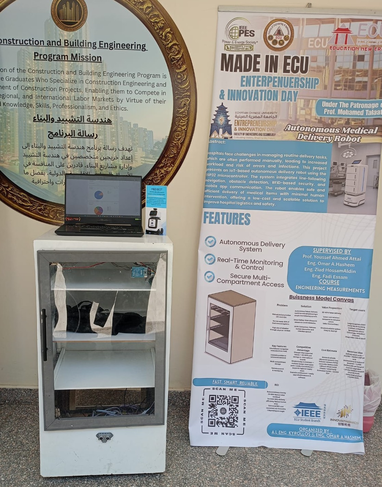
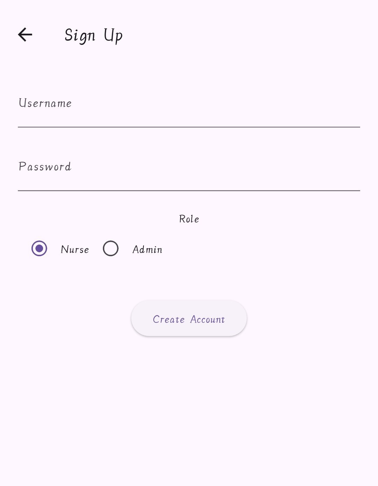
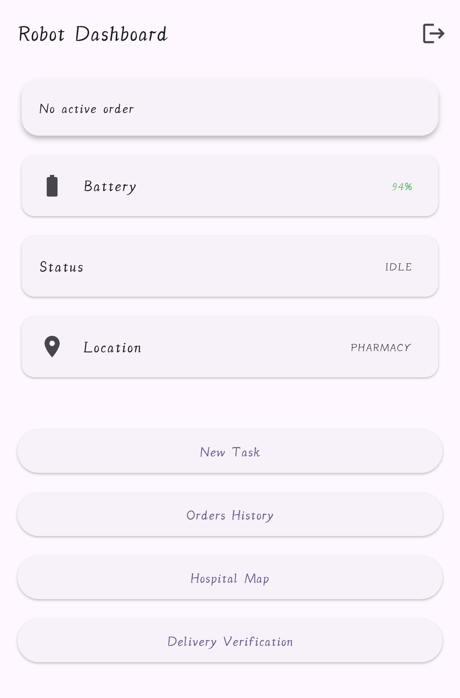
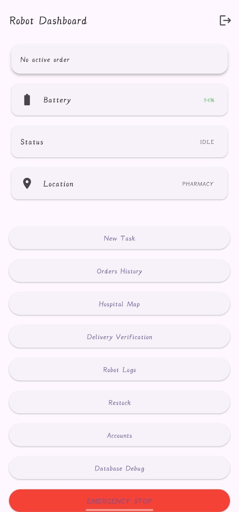

🤖 Autonomous Medical Delivery Robot
Overview
The Autonomous Medical Delivery Robot is an IoT-enabled robotic platform designed to automate the transportation of medicines and medical supplies inside hospital environments. The robot receives delivery requests through a mobile application, navigates autonomously using line-following technology, detects obstacles in real time, and provides secure RFID-based access to authorized users only. The system reduces healthcare staff workload while improving delivery efficiency, safety, and operational reliability.
Objectives
- Automate hospital delivery operations.
- Reduce healthcare staff workload.
- Provide secure medicine transportation.
- Enable real-time monitoring and task management.
- Improve logistics efficiency.
- Integrate mobile application control with embedded systems.
Key Features
- Autonomous Line Following Navigation.
- Obstacle Detection & Avoidance.
- RFID-Based Secure Access Control.
- Inventory Monitoring System.
- Flutter Mobile Application.
- Order Tracking & History.
- Battery Monitoring.
- Wi-Fi Communication.
- Admin Dashboard.
- Medical Staff Dashboard.
System Architecture
- ESP32 DevKit V1 Main Controller.
- IR Sensors for Line Tracking.
- Ultrasonic Sensors for Obstacle Detection.
- RFID Reader for Secure Authentication.
- BTS7960 Motor Driver.
- Dual DC Motors.
- Flutter Mobile Application.
- Firebase & SQLite Database Integration.
- LCD Display and Buzzer Alerts.
Technologies Used
- ESP32
- Flutter
- Firebase
- SQLite
- Arduino IDE
- RFID
- IR Sensors
- Ultrasonic Sensors
- Wi-Fi Communication
- Embedded Systems
- IoT
Challenges & Solutions
-
Challenge:
Managing multiple sensors using limited ESP32 pins.
Solution: Added an I/O expansion module to support additional peripherals. -
Challenge:
Ensuring secure access to medical supplies.
Solution: Implemented RFID-based authentication and access control. -
Challenge:
Maintaining stable communication between robot and application.
Solution: Used Wi-Fi communication with Firebase synchronization. -
Challenge:
Safe operation in hospital environments.
Solution: Implemented ultrasonic obstacle detection and avoidance.
Results
- Successful autonomous medical delivery operation.
- Stable line-following navigation.
- Reliable obstacle detection.
- Secure RFID compartment access.
- Real-time monitoring through Flutter application.
- Inventory monitoring and task tracking.
- Support for both medicine and equipment delivery.
Future Improvements
- SLAM-Based Navigation.
- Computer Vision Integration.
- AI Route Optimization.
- Automatic Charging Dock.
- Hospital Management System Integration.
- Real-Time Robot Tracking.
Gallery

Final Robot Prototype & Project Exhibition

User Registration Interface

Medical Staff Dashboard

Administrator Dashboard